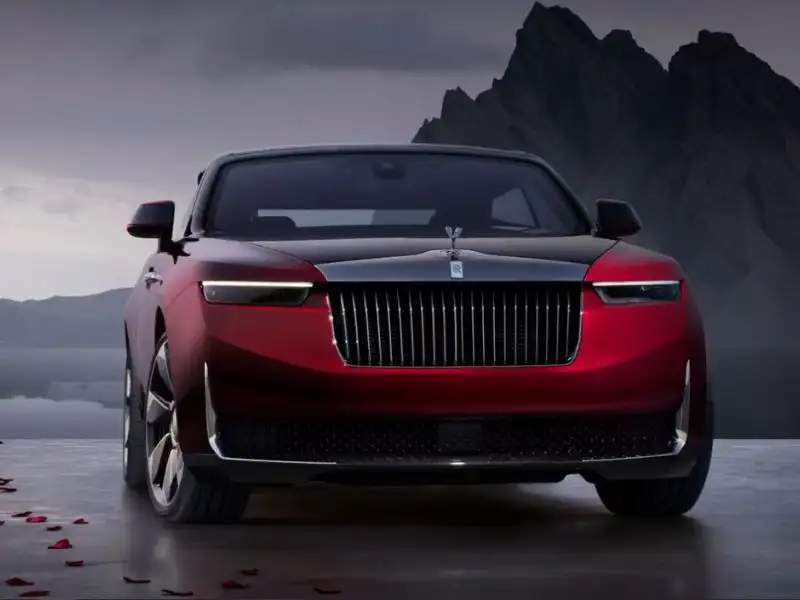
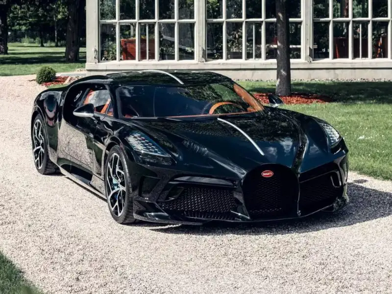
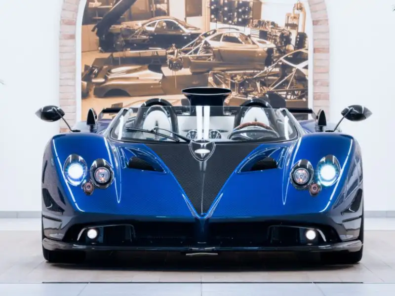

Rolls-Royce La Rose Noire Droptail
Ano: 2025

Informações
Inspirado na rosa negra, o La Rose Noire tem carroceria sob medida e acabamento interno esculpido em madeira. Só quatro unidades foram produzidas no mundo.
Bugatti La Voiture Noire
Ano: 2019

Informações
Com motor W16 quadriturbo e linhas que prestam homenagem ao lendário Type 57 SC Atlantic, o modelo teve apenas uma unidade produzida. É exclusividade pura.
Pagani Huayra Codalunga
Ano: 2022

Informações
desenvolvido como uma despedida de Horacio Pagani ao modelo Zonda, com apenas três unidades. Com rodas traseiras parcialmente cobertas e motor V12, é praticamente uma peça de museu.